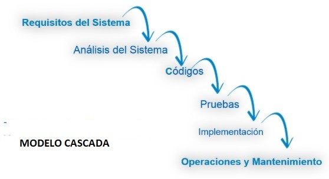
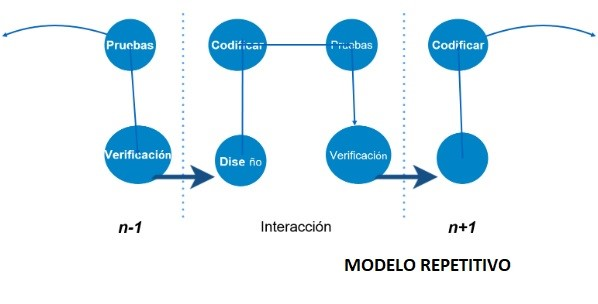
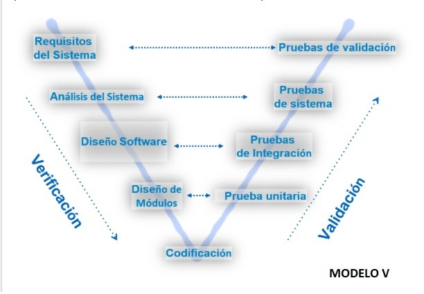
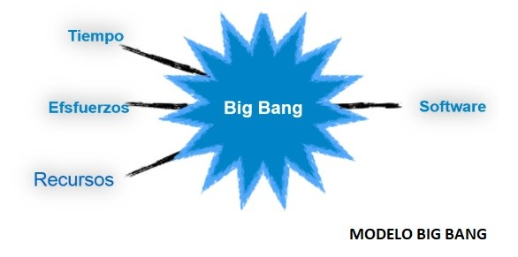
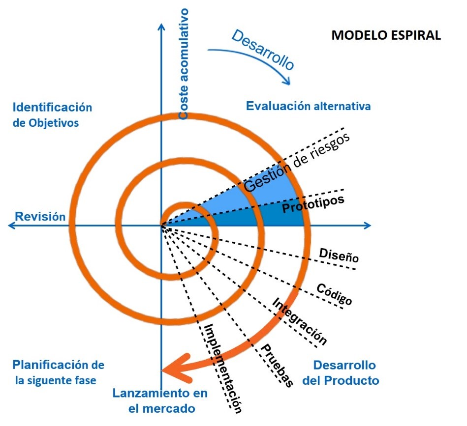

MODELOS DE DESARROLLO DE SOFTWARE
Para el desarrollo de software existe una representación que nos permite seleccionar el proceso a utilizar siendo este el más apropiado según las necesidades para esto existe los siguientes modelos.
1. Modelo Cascada
En este modelo se debe seguir una secuencia de forma estricta que indique que solo cuando culmine un paso pueda continuar al siguiente
2. Modelo Repetitivo
En este modelo se orienta el proceso de desarrollo de software en repeticiones cada vez que un ciclo culmina.
3. Modelo V
En el modelo V nos permite tener más opciones a diferencia del modelo cascado al momento de encontrar un error permitiendo volver hacia atrás así estemos en una etapa más adelante.
4. Modelo Big Bang
En este modelo se necesita poca planificación ya que se asocian todos los módulos para probar finalmente si funciona esperando varios errores.
5. Modelo Espiral
En este modelo se disminuye los peligros al desarrollar un software como lo son los costos y tiempo ya que se evalúa constantemente con los usuarios pudiendo corregirlos a tiempo real.
